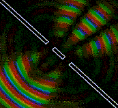
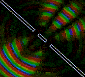

In fact often the case with many waves coming from different sources and the transmission to a spatial domain. When it can appear a peculiar phenomenon of waves, called interference phenomena.
 

Using instruments similar experiments, but here we replace the marble with a light bar, at both ends of the bar was assigned two small islands located touching the water (figure below).

When P oscillating bars, two marbles in A and B on the water to create two sets of waves propagated along the concentric circle. Us open knit circle wave mixing two together on the water.
When the waveform has stabilized, we distinguish on the water a group of elements of the curve with their vibration amplitude is maximal, and alternating between them is a group composed of the different curves elements with their vibration amplitude is minimal, zero.
Pictures, including the group of elements of the curve with the maximum vibration amplitude and the group of elements of the curve with minimal fluctuation band called interference pattern (Figure below).

In the experiment, suppose A and B are the two sources of the same frequency oscillation, in phase with each other and with their waves transmitted to a point M of the plane in two paths d1, d2 (Figure below).
The two sources oscillating with the same frequency and phase, or with a constant phase difference is called the combined resources and create waves that are called waves combine.
In the experiments described above, two marbles do not fluctuate independently of each other. We always oscillate the same frequency and phase with the rod P, and therefore it is true that the two sources combined.
It demonstrated that:
At the point where the signal path d = I d2-d1I = n.λ with n = 0, 1, 2 .... then two waves in phase with each other at that point, the amplitude of the synthesized wave double border the wave components, fluctuations in the environment here is the largest.
At the point where the signal path d = I d2-d1I = (2n + 1) .λ / 2, the phase two waves opposite to each other at that point, the amplitude of the synthesized wave lbang not, in this environment is not oscillating.
In mathematics it is proven that the locus of points oscillate with maximum amplitude (solid lines) and the oscillation amplitude point minimum (dotted line) (in the case we are looking at, knives with zero amplitude) is a family of hyperbolic lines (see picture below).
Interference is a combination of two or more waves combine in space. In the space domain, there are places where vibration amplitude of lip wall elements is enhanced or diminished.